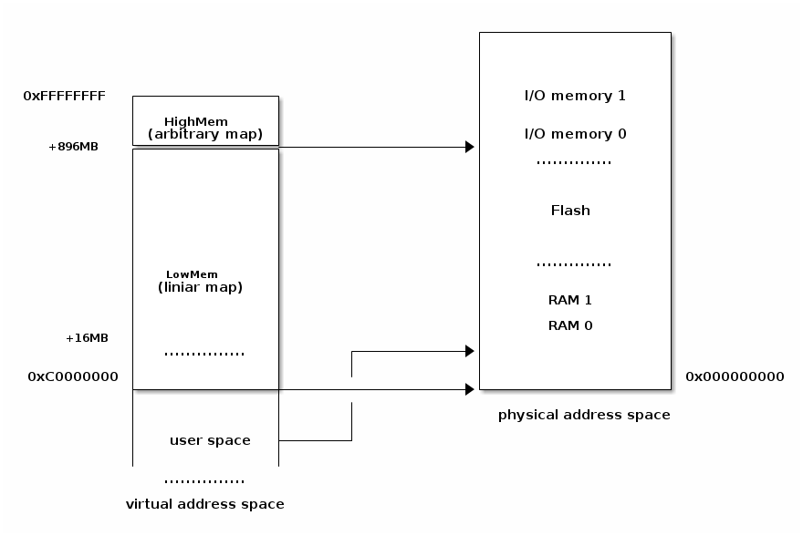
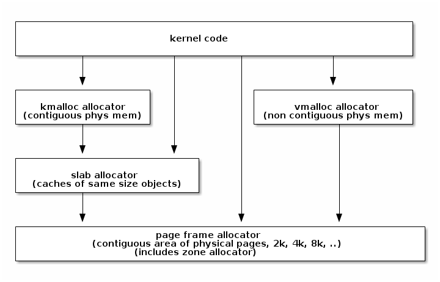
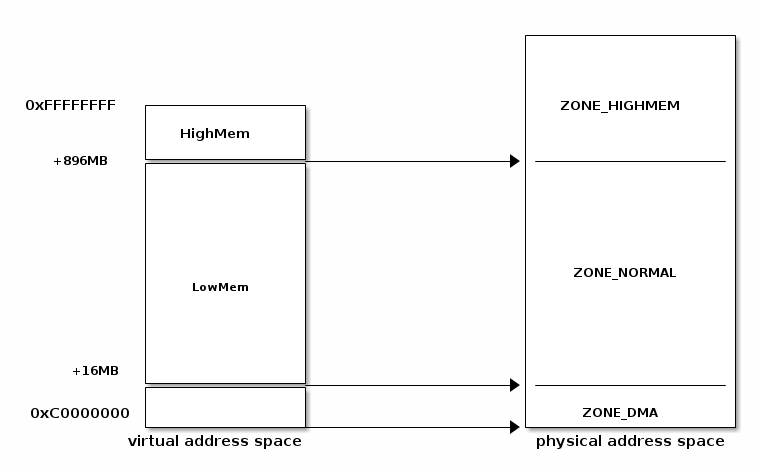

Memory Management¶
Lecture objectives:¶
- physical memory management in Linux
- virtual memory management in Linux
Memory addressing basics¶
- physical address (processor <-> physical memory)
- user virtual address
- each process has its own mapping
- only used portions are mapped
- kernel logical address
- 1-1 mapping kernel memory to physical memory
- kernel virtual address
- non-contiguous physical memory allocation
Physical memory management in Linux¶
physical memory is devided into chunks named pages
- sometimes refered as frames
- size = 1 << PAGE_SHIFT
separated from virtual memory management
each frame has associated a struct page
 
- stored in lowmem as an array of descriptors (mem_map)
- contains flags, counters, virtual address (if any)
- alloc_pages(gfp_mask, order)
- allocates 2^order pages
- returns page descriptor (struct page)
- __get_free_pages(gfp_mask, order)
- allocates 2^order pages
- returns the linear address of the page
- other functions
- alloc_page / __get_free_page()
- __get_zero_page() / __get_dma_page()
- avoid external fragmentation
- fixed sized blocks are grouped in lists
- allocations performed only in 2^order size
- allocation of size N block
- if N sizes block exists. Trivial.
- if not, get a 2N sized block and split it.
- free of size N block
- if there are adjacents free blocks then merge them into a 2N block
- use 11 list for blocks of sizes: 1, 2, 4, 8, .. 1024 pages
- largest allocation request corresponds to 4MB (1024 pages)
- each zone has its own buddy allocator
- physical address of the first page in a group is multiple of group size
- buddy algorithm is used for allocating pages.
- using the buddy allocator will result in external fragmentation
- create smaller blocks with fixed size
- allocations are seen as objects
- objects are grouped into caches
- each cache is a “store” of objects of the same type
- area of memory that contains a cache is divided into slabs
- each slab contains one or more contiguous pages
- freed objects are cached
- kernel tends to use same type of date repeatedly
- allocation requests frequently use the same size for allocation
- for non-standard request we can use the next size slab
- reduces allocation footprint because of caches
- objects are uniformly distributed to cache lines
- virtual memory is used in
- kernel space
- user space
- allocating a memory zone in kernel/user space means:
- allocating a physical page
- allocating a zone in the virtual space
- page table is used by:
- CPU to convert a virtual address to a physical address
- kernel (search, add, TLB)
- address space descriptor
- used by the kernel to manage the virutal address space
- list of zone descriptors